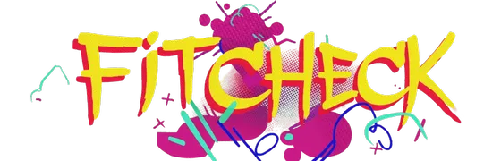
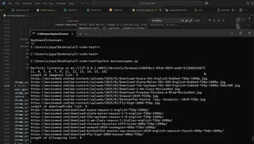
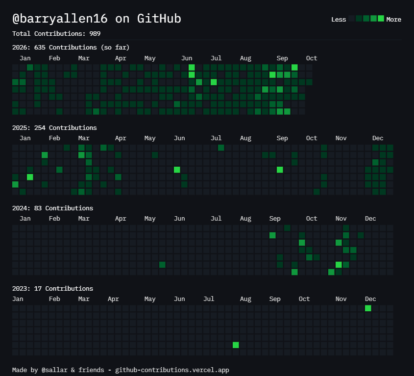
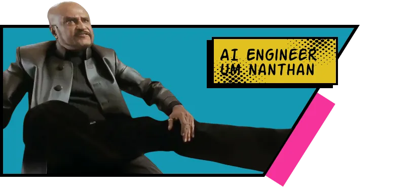
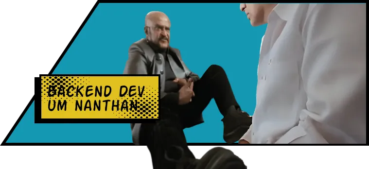

jayadithya
AI / ML engineer
i build ai systems bottom-up, from tokenizers and pipelines to inference and eval.
chennai, tamilnadu, india.
view résumébroad across the bar. deep down the stem.
every project below answers three questions: what problem it solves, what i gave up to solve it, how it works.


no projects found in this category... yet!
blubridge technologies · chennai
dr. m.g.r. educational and research institute · chennai · 8.0/10
"FitCheck: Multi-Modular AI Framework for Cross-Cultural Fashion Recommendation" · pune, india
read the paper (pdf) · doi 10.1109/tqcebt67648.2026.11681836
four years of commits, straight from github. mostly rust, python and typescript.


